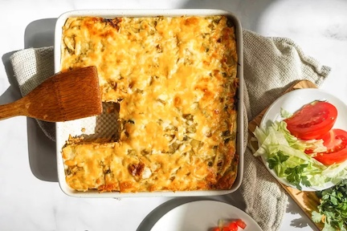

Burrito Casserole

What is a burrito casserole?
Seasoned rice, shredded chicken, beans, salsa verde, and cheese are layered in a casserole
dish and baked until perfectly melty. Cut them into small, medium, or generous portions,
and leftovers, if any, reheat beautifully.
Steps
- Preheat the oven to 350°F (175°C).
-
In a small bowl, combine the chili powder, paprika, garlic powder, onion powder, ground cumin,
and salt. You will use half of it to season the chicken and the other half in the rice.
-
Place the chicken breasts on a large plate and use one hand to rub 1 teaspoon olive oil all
over them. Sprinkle them with about half of the seasoning mix. Set it aside while you make the rice.
-
Heat the remaining 2 tablespoons olive oil in a large skillet over medium heat. Add the rice
and the remaining seasoning mix. Cook stirring continuously for about 2 minutes, until the
rice is lightly toasted.
Stir in the chicken stock, green chilis, and tomato paste. Place the chicken breasts (make
sure to get all the tasty seasoning stuck to the plate too) on top of the rice. Increase the
heat to medium-high. As soon as it comes up to a boil, reduce the heat to low and cover the
skillet with a lid. Cook for 20 to 25 minutes, until chicken is cooked through and the rice is tender.
-
Transfer the chicken breasts onto a large plate and shred them into bite-sized pieces using
two forks or your hands (you may need to wait for it to cool down a bit).
Give the rice a stir, taste, and season with more salt if desired. Add about 2 tablespoons
of chicken stock if the rice looks dry and needs more liquid.
-
In an 8 x 8-inch or 9 x 9-inch baking dish, spread 1/4 cup salsa verde. Layer one tortilla
on top, trimming it as needed to cover the dish. Evenly spread a layer of half each of the
beans, rice, and chicken. Sprinkle with 3/4 cup cheese and 1/2 cup salsa verde.
Repeat with another layer of tortilla and the remaining beans, rice, chicken, 3/4 cup cheese,
and 1/2 cup salsa. Add a final layer of tortilla and top it with 1/4 cup salsa verde and 1/2 cup cheese.
-
Cover the baking dish tightly with foil and bake for 20 minutes. Remove the foil and bake for
an additional 8 to 10 minutes, until the cheese is melted.
Serve it with optional toppings like sour cream, chopped cilantro, shredded lettuce, diced
avocados, and chopped tomatoes.
Ingredients
- 1 1/2 teaspoons chili powder
- 1 1/2 teaspoons paprika
- 1 teaspoon garlic powder
- 1 teaspoon onion powder
- 3/4 teaspoon ground cumin
- 3/4 teaspoon salt, plus more to taste
- 1 pound boneless, skinless chicken breasts
- 2 tablespoons plus 1 teaspoon olive oil, divided
- 1 cup uncooked long-grain white rice
- 2 cups low-sodium chicken stock, plus more as needed
- 1/4 cup green chilis
- 1 tablespoon tomato paste
- 1 1/2 cups store-bought or homemade salsa verde
- 3 (10-inch) flour tortillas
- 1 (15-ounce) can pinto beans, rinsed and drained
- 2 cups shredded colby jack cheese